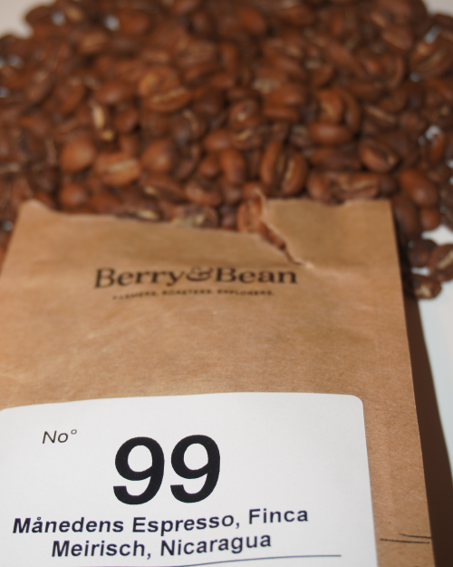
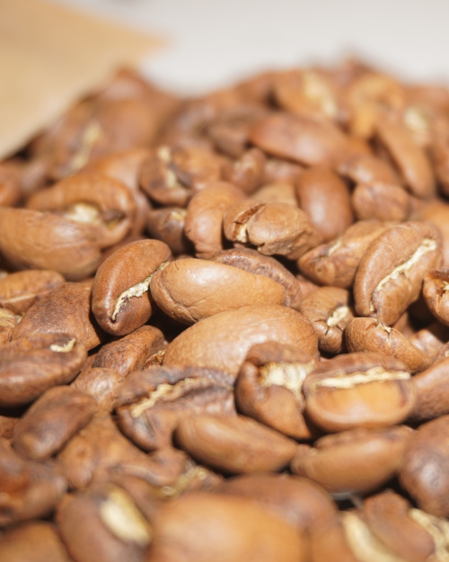
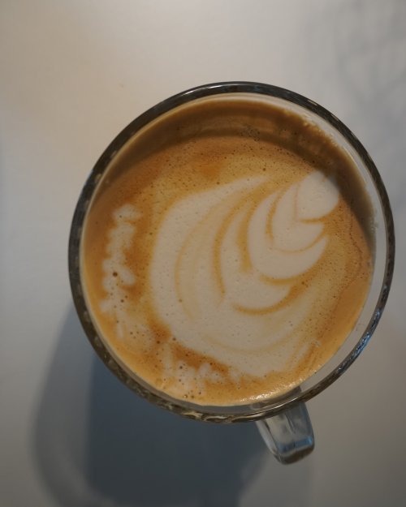

Info om bønnen
I denne espresso-udgave, er der er fuld fart på sødme og frugt i kaffen. På trods af at kaffen føles let i munden, så giver de lidt lette chokoaldetoner, i kombination med frugtsamgen, nærmest en eftersmag som når man får banankage.
Bønnens udseende
Kaffen er lavet på arabicabønnen, med det meget mundrette navn Maragogype, og har sin oprindelse i Nicaragua. En kæmpe stor bønne, der er på trods af sin kæmpe størrelse, skal ristets ret lyst og kværnes ret fint.
Brygning
Anbefalet ratio er 18g. kaffe til 38 g/ml væske. Maks 28 sekunder genemløbstid. Når bønnerne kværnes spredes en meget gennemtrængende, men god frugtagtig og sød duft. Når den løber gennem maskinen ses den honningagtige farve og konsistens.
Resultat
Smagsintensiteten er 3 ud af 5, mens sødmen er 4 ud af 5. Den første tår kan have en lidt bitter smag, men efterfølges af en dejlig sødme, samt en 2 ud af 5 undertone af frugt. Eftersmagen har en undertone af karamel og chokolade med en smagsnuance på 3 ud af 5.
Hvis du kunne tænke dig at prøve oktober måneds bønne fra Berry&Bean, kan du læse mere og købe den herunder